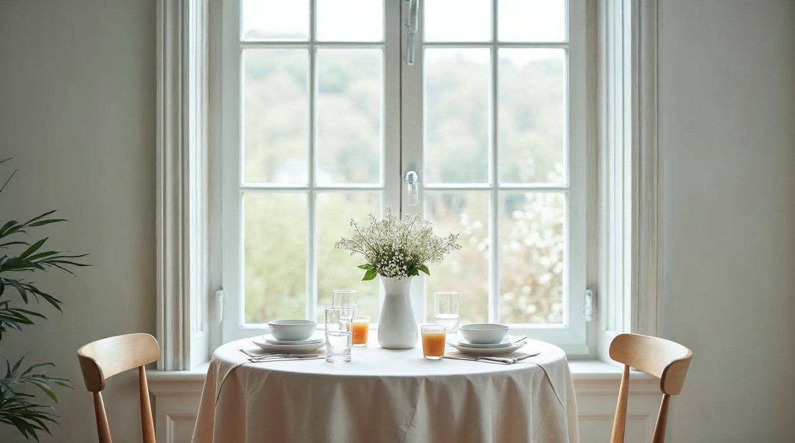
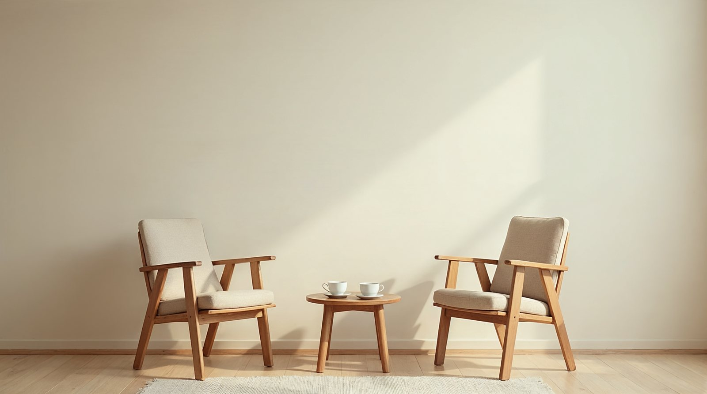
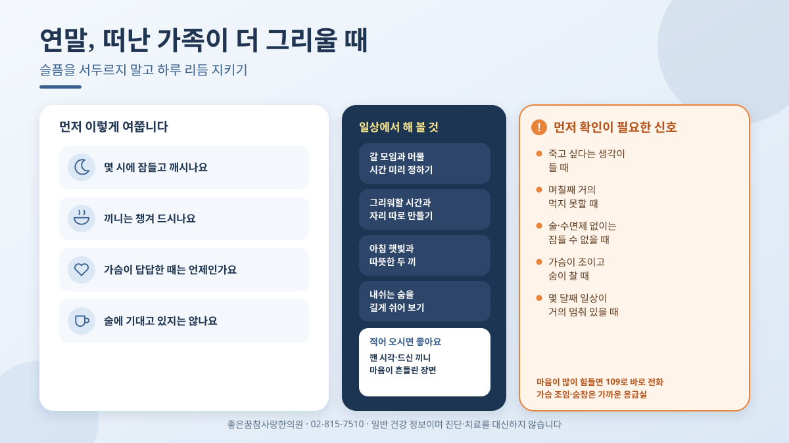

이종호 한의사 감수좋은꿈참사랑한의원 대표원장 (한의사 면허번호 19769)발행 2026-11-27 · 수정 2026-11-27
이 글의 차례
12월 첫 주 저녁, 퇴근길에 마트에 들릅니다. 계산대 앞에 귤 상자가 쌓여 있고 매장에는 캐럴이 흘러나옵니다. 귤을 한 봉지 집어 들다가 문득, 겨울이면 귤을 상자째 사 들고 오시던 아버지 얼굴이 떠오릅니다. 목이 메어 서둘러 계산을 하고 나옵니다. 집에 와 휴대폰을 켜니 가족 대화방에 연말 모임 날짜를 정하자는 글이 올라와 있습니다.
답을 쓰려다 그만둡니다. 그날 밤엔 누워도 잠이 오지 않고, 새벽 3시쯤 눈이 떠져 다시 천장만 바라봅니다.
진료실에서 이런 말씀을 자주 듣습니다. "벌써 몇 달이 지났는데 아직도 이러면 안 되는 거죠?" "남들 앞에서는 괜찮은 척하는데, 혼자 있으면 무너져요." "가슴에 돌덩이가 얹힌 것 같아요." 그 말씀을 듣고 있으면 저도 한동안 말을 고르게 됩니다. 사랑하는 사람을 떠나보내고 한 해를 버텨 오셨다는 것만으로도, 그동안 얼마나 애쓰셨을까 싶습니다.
먼저 말씀드리고 싶은 것이 있습니다. 그리움과 슬픔은 고쳐야 할 병이 아니라, 사랑했던 만큼 남는 자리입니다. 그러니 연말에 그 자리가 더 크게 느껴지는 것은 이상한 일이 아닙니다. 다만 슬픔이 몸까지 오래 흔들어 잠이 무너지고, 끼니를 거르고, 가슴이 늘 답답하다면 그 몸을 돌보는 일은 함께할 수 있습니다.
슬픔을 서둘러 끝내려 하기보다 하루의 기본 리듬을 지키고, 그리워할 시간과 자리를 따로 정해 두고, 혼자 견디지 않는 것. 오늘은 그 이야기를 드리려 합니다.
왜 연말에 빈자리가 더 커질까요
연말은 함께 있는 것을 전제로 한 시간입니다. 송년회와 가족 모임, 크리스마스, 새해 인사, 단체 사진까지, 한 사람이 빠진 자리가 눈에 띄는 장면이 한꺼번에 몰려옵니다. 지난해 이맘때 함께했던 일이 떠오르고, 그 사람이 좋아하던 음식과 노래가 거리 곳곳에서 불쑥 나타납니다. 한 해를 정리하는 분위기도 마음을 더 깊이 가라앉힙니다.
올해를 돌아보면 결국 그 사람이 떠난 해로 기억되니까요.
기일이나 생일, 처음 맞는 명절과 연말이 다가오면 머리보다 몸이 먼저 기억하는 경우가 많습니다. 달력을 보지 않았는데도 잠이 얕아지고, 입맛이 떨어지고, 이유 없이 기운이 빠집니다. 해가 짧고 추워 바깥에 나가는 일이 줄고 혼자 있는 시간이 길어지면, 생각은 더 자주 그 사람에게로 돌아갑니다.
슬픔은 몸으로도 옵니다. 가슴이 조이거나 무겁고, 한숨이 자주 나고, 목에 무언가 걸린 듯 메이고, 입맛이 없고, 새벽에 깨고, 집중이 잘 안 됩니다. 이런 반응은 사랑하는 사람을 잃은 뒤 흔히 나타납니다. 한의학에서는 근심과 슬픔이 폐와 이어져 있어 슬픔이 깊으면 숨이 짧아지고 가슴이 답답해지며, 생각이 많으면 비위가 상해 입맛이 떨어진다고 보았습니다.
오래전 사람들도 슬픔이 몸에 어떤 자리를 남기는지 잘 알고 있었던 셈입니다.
슬픔은 대개 파도처럼 옵니다. 괜찮은 날이 이어지다가 어떤 장면에서 갑자기 무너지고, 시간이 흐르면서 그 파도의 간격이 조금씩 벌어집니다. 그런데 몇 달이 지나도 씻고 먹고 출근하는 일상이 거의 멈춘 채이거나, 그리움보다 죄책감과 자책에 갇혀 있거나, 술 없이는 잠들 수 없게 되었다면 혼자 견디기보다 도움을 받으셔야 할 때입니다.
이런 분들을 자주 뵙습니다
이런 분들이 많습니다. 올해 부모님을 떠나보내고 처음 연말을 맞는 분입니다. 장례를 치르고 서류를 정리하고 집을 치우느라 몇 달을 정신없이 보냈는데, 일이 다 끝나고 연말이 다가오자 그제야 슬픔이 한꺼번에 몰려온다고 하십니다. 이런 분께는 그동안 슬퍼할 틈조차 없었던 몸이 이제야 쉬자고 말하는 것일 수 있다고 말씀드립니다.
오랜 간병 끝에 배우자를 보낸 어르신들도 뵙습니다. 병원과 집을 오가며 하루를 채우던 간병이 사라지니 하루가 너무 길고, 밥은 대충 드신다고 하십니다. 혼자 먹는 밥상이 쓸쓸해서 아예 차리지 않게 된다는 말씀도 자주 듣습니다. 이런 분께는 하루 한 끼라도 따뜻한 국이 있는 밥을 드시는 것과, 오전에 한 번은 집 밖에 나가 걷는 것부터 같이 정합니다.
동작구에 사시는 분들 가운데는 현충원이나 가까운 공원 길을 천천히 걸으며 마음을 고르는 분들도 계십니다.
오래 함께한 반려동물을 떠나보낸 분들도 계십니다. 그게 그렇게까지 슬플 일이냐는 반응을 들을까 봐 말도 못 하고 혼자 견디시는 경우가 많습니다. 저는 그 슬픔의 크기를 남이 정할 수는 없다고 말씀드립니다.
가족 모두가 같은 사람을 그리워하면서도, 서로를 걱정해 그 사람 이야기를 꺼내지 못하고 각자 견디는 집도 있습니다. 같은 식탁에 앉아 있는데 가장 하고 싶은 이야기는 아무도 하지 않는 것이지요.
연말을 지나는 몇 가지 방법
먼저 어떤 모임에 갈지 미리 정해 두세요. 모든 초대에 응할 필요는 없습니다. 가기로 한 모임이라도 머물 시간을 정해 두고, 힘들면 먼저 일어날 수 있게 돌아갈 방법을 미리 마련해 두면 마음이 한결 가볍습니다. 가까운 한 사람에게만이라도 요즘 이런 상태라고 말해 두면, 자리에서 갑자기 눈물이 나도 덜 당황스럽습니다.
그리워할 시간과 자리를 따로 만들어 보세요. 슬픔은 피하려 할수록 예상하지 못한 순간에 불쑥 찾아오곤 합니다. 차라리 날을 정해 그 사람이 좋아하던 음식을 해 먹거나, 짧은 편지를 쓰거나, 사진 한 장을 꺼내 가족과 그 사람 이야기를 나누는 편이 마음을 덜 흔듭니다. 산소나 봉안당에 다녀오는 것도 좋고, 초를 하나 켜 두고 잠시 앉아 있는 것도 좋습니다.
울어도 괜찮고, 그 사람과의 우스운 기억에 웃어도 괜찮습니다. 웃었다고 죄책감을 느끼실 필요는 없습니다.
하루의 기본 리듬은 지켜 주세요. 마음이 무너진 날에도 아침에 일어나는 시각은 크게 바꾸지 않고, 일어나면 커튼부터 열어 햇빛을 봅니다. 세 끼를 다 챙기기 어렵다면 두 끼라도 따뜻한 것으로 드세요. 입맛이 없을 때는 죽이나 국에 밥을 조금 말아 드시는 것으로도 충분합니다. 오후에는 20~30분쯤 바깥을 걸어 보세요.
몸을 움직이고 바깥 공기를 쐬는 시간은 생각이 한곳에 고이지 않게 도와줍니다.
잠이 오지 않는다고 술에 기대지는 마세요. 술은 잠드는 것을 도와주는 것처럼 느껴지지만 수면 후반을 얕게 만들어 새벽에 깨기 쉽게 하고, 다음 날 마음을 더 가라앉힐 수 있습니다. 새벽에 깨어 20분 넘게 뒤척인다면 잠시 일어나 어두운 곳에서 따뜻한 물을 한 모금 마시고, 떠오른 생각을 종이에 한 줄 적어 두세요. 그리고 졸음이 다시 오면 눕습니다.
낮잠은 오후 3시 전에 20분 안쪽으로만 짧게 주무세요.
가슴이 조이고 숨이 막히는 듯할 때는 손을 가슴에 얹고, 들이쉬는 숨보다 내쉬는 숨을 길게 해 보세요. 넷을 세며 들이쉬고 여섯을 세며 내쉬기를 몇 번 되풀이하면 몸이 조금 느슨해집니다. 따뜻한 차를 두 손으로 감싸 쥐는 것만으로도 굳은 어깨가 풀리는 분이 많습니다.
유품 정리는 서두르지 않으셔도 됩니다. 주변에서 이제 정리하라는 말을 들으면 마음이 급해지지만, 정리할 때는 마음이 따라올 때입니다. 한꺼번에 하기보다 서랍 하나, 옷장 한 칸씩 나누어 하고, 혼자 하기 버거우면 가족과 날을 잡아 함께 하세요. 손때 묻은 물건 몇 가지는 상자에 담아 곁에 두셔도 괜찮습니다.
기일이나 생일처럼 마음이 크게 흔들릴 날이 다가온다면, 그날 하루를 어떻게 보낼지 미리 정해 두는 편이 덜 힘듭니다. 일정을 비워 둘지, 일부러 사람들과 함께 있을지, 아침에 무엇을 하고 저녁은 누구와 먹을지 정해 두면, 막연히 그날을 기다리며 두려워하는 시간이 줄어듭니다.
곁에 있는 분들께도 한 말씀 드리고 싶습니다. 위로의 말을 잘 고르지 못해도 괜찮습니다. 힘내라는 말보다 생각하고 있다는 말, 같이 밥 먹자는 말이 더 오래 남습니다. 떠난 사람의 이름을 피하지 말고 자연스럽게 불러 주세요. 그 이름을 다시 듣는 것만으로 위로가 되는 분이 많습니다.

아이와 함께 슬픔을 지나는 집이라면
아이들의 슬픔은 어른과 모양이 다릅니다. 조금 전까지 울다가 금세 웃으며 놀고, 같은 질문을 며칠씩 되풀이하기도 합니다. 슬픔을 느끼지 않아서가 아니라, 아이는 감당할 수 있는 만큼씩 나누어 슬퍼하기 때문이라고 알려져 있습니다. 배가 아프다고 하거나, 밤에 혼자 자지 않으려 하거나, 동생처럼 어리광이 늘어나는 모습으로 나타나기도 합니다.
이럴 때는 아이 나이에 맞는 쉬운 말로 사실을 그대로 알려 주시기를 권합니다. 멀리 여행을 갔다는 식의 말은 아이를 더 오래 기다리게 만들 수 있습니다. 엄마 아빠도 슬퍼서 운다는 것을 보여 주셔도 괜찮고, 아이가 그린 그림이나 편지를 함께 산소에 가져가는 것처럼 아이도 그리워하는 일에 참여하게 해 주세요.
학교 가고 밥 먹고 잠드는 하루의 틀이 지켜지는 것만으로도 아이는 큰 안정을 얻습니다.
얼마나 지켜보고, 언제 진료를 받을까요
슬픔에는 정해진 기간이 없습니다. 다만 몇 주째 하루 네댓 시간도 이어서 자지 못하거나, 입맛이 없어 체중이 눈에 띄게 줄거나, 출근과 집안일이 몇 주째 거의 멈춰 있다면 혼자 견디지 마시고 상담을 받아 보시길 권합니다. 마음의 문제는 정신건강의학과와 함께 살피는 것이 좋을 때가 많고, 필요하면 저도 그쪽 진료를 함께 권해 드립니다.
다음과 같은 경우에는 기다리지 말고 먼저 해당 진료를 받으세요.
- 죽고 싶다는 생각이나, 떠난 사람을 따라가고 싶다는 생각이 드는 경우
- 며칠째 거의 먹지 못하거나 물도 제대로 마시지 못하는 경우
- 술이나 수면제 없이는 잠들 수 없게 된 경우
- 가슴이 조이듯 아프고 숨이 차며 식은땀이 나는 경우
- 몇 달이 지나도 일상이 거의 멈춘 채, 죄책감과 자책에서 벗어나기 어려운 경우
죽고 싶은 생각이 들거나 마음이 많이 힘들 때는 ☎ 109로 바로 전화해 이야기를 나눌 수 있습니다. 큰 슬픔 뒤에 가슴이 조이듯 아프고 숨이 차면 심장 문제일 수 있으니 지체하지 말고 가까운 응급실로 가세요. 복용 중인 약은 처방한 의사와 상의 없이 줄이거나 끊지 않습니다.

좋은꿈참사랑한의원에 처음 오시면
처음 오시면 저는 말씀하고 싶은 만큼만 들려 달라고 부탁드립니다. 떠난 분 이야기를 꼭 하셔야 하는 것은 아닙니다. 대신 요즘 몇 시에 잠들고 몇 시에 깨시는지, 끼니는 어떻게 드시는지, 대변은 편한지, 가슴이 답답하거나 두근거리는 때가 언제인지, 술은 얼마나 드시는지, 드시는 약이나 다니시는 병원이 있는지를 차례로 여쭙습니다.
그다음 양손을 올려 봐 달라고 말씀드리고 맥을 짚습니다. 맥을 짚는 동안 몸이 찬 편인지, 손발은 어떤지 여쭙고, 필요하면 혀를 보고 명치와 배가 단단하게 굳어 있지는 않은지 살핍니다. 그렇게 모은 이야기로 잠과 소화, 가슴 답답함을 받쳐 줄 침이나 한약 상담을 함께 정하고, 치료가 끝나면 잠시 누워 쉬다 가시도록 합니다.
비용과 건강보험 적용은 방문 전 전화로 확인해 주세요.
다시 오시면 지난번 이야기에 이어서, 그사이 잠은 어땠는지, 연말 모임에는 다녀오셨는지, 끼니는 챙기셨는지부터 여쭙습니다. 오실 때 일주일 동안 깬 시각과 드신 끼니, 가슴이 답답했던 때, 마음이 크게 흔들렸던 장면을 한 줄씩 적어 오시면 이야기가 수월해집니다. 아무것도 적지 못하셨어도 괜찮습니다. 그 빈칸이 지금의 상태를 말해 주기도 하니까요.
마치며
그리움은 사랑의 다른 이름이라고 생각합니다. 그러니 올해의 연말이 예전과 같지 않아도 괜찮습니다. 웃음이 줄어도, 모임을 몇 번 건너뛰어도, 혼자 울어도 괜찮습니다. 다만 그 시간을 지나는 동안 몸까지 무너지지 않도록, 잠과 끼니와 햇빛만은 조금씩 챙겨 주세요. 그 일을 혼자 하기 어렵다면 함께하겠습니다.
다음에 저를 만나시면, 요즘 몇 시에 깨시는지, 오늘은 무엇을 드셨는지부터 여쭙겠습니다.
함께 읽으면 좋은 글
- 명절이나 연말을 혼자 보내게 될 때 마음을 어떻게 돌보나요?
- 별일 없어도 눈물이 자주 날 때는 어떻게 하나요?
- 새벽에 자꾸 잠이 깨는 이유는 무엇이고, 어떤 점을 살펴보나요?

왜 연말에 빈자리가 더 커질까요
- 연말은 함께 있는 것을 전제로 한 시간입니다.
- 송년회와 가족 모임, 크리스마스, 새해 인사, 단체 사진까지, 한 사람이 빠진 자리…
이런 분들을 자주 뵙습니다
- 이런 분들이 많습니다.
- 올해 부모님을 떠나보내고 처음 연말을 맞는 분입니다.
연말을 지나는 몇 가지 방법
- 먼저 어떤 모임에 갈지 미리 정해 두세요.
- 모든 초대에 응할 필요는 없습니다.
아이와 함께 슬픔을 지나는 집이라면
- 아이들의 슬픔은 어른과 모양이 다릅니다.
- 조금 전까지 울다가 금세 웃으며 놀고, 같은 질문을 며칠씩 되풀이하기도 합니다.
자주 묻는 질문
몇 달이 지났는데도 계속 슬프면 이상한 건가요?
슬픔에는 정해진 기간이 없고, 기일이나 연말처럼 특별한 때에 다시 커지는 것도 흔한 일입니다. 다만 일상이 몇 주째 거의 멈춰 있거나 잠과 식사가 무너졌다면 상담을 받아 보시길 권합니다.
연말 모임에 꼭 가야 할까요?
모든 모임에 응할 필요는 없습니다. 갈 모임을 미리 고르고, 머물 시간과 돌아갈 방법을 정해 두면 부담이 줄어듭니다. 가지 않기로 했다면 그 시간에 그리운 분을 위한 작은 시간을 따로 가져 보셔도 좋습니다.
한의원에서 마음이 힘든 것도 진료하나요?
잠과 소화, 가슴 답답함처럼 몸에 드러난 부분을 맥을 짚으며 함께 살피고, 침이나 한약 상담을 정합니다. 정신건강의학과 진료가 필요해 보이면 함께 권해 드립니다.
잠이 안 와서 술을 한두 잔 마시는데 괜찮을까요?
술은 수면 후반을 얕게 만들어 새벽에 깨기 쉽게 하고, 다음 날 마음을 더 가라앉힐 수 있습니다. 잠들기 어렵다면 술보다 잠자리 습관을 먼저 바꾸고, 그래도 어려우면 상담을 받아 보세요.
가족이 너무 힘들어하는데 어떻게 곁에 있어 주면 좋을까요?
좋은 말을 찾기보다 곁에 있어 주는 것이 먼저입니다. 같이 밥을 먹고, 떠난 분의 이름을 자연스럽게 불러 주세요. 죽고 싶다는 말을 한다면 혼자 두지 말고 109로 함께 전화해 주세요.
좋은꿈참사랑한의원은 재진 때 지난번 이야기부터 이어서 여쭙니다. 진료시간과 예약은 오시는 길에서 확인하세요.
어디서 상담받을 수 있나요?
좋은꿈참사랑한의원은 서울 동작구 만양로2길 2 신성빌딩 3층·5층(서울 동작구 상도동, 7호선 상도역 3번 출구 근처)에 있습니다. 한의사 3명(이종호 대표원장, 조영기 수석진료원장, 정원영 진료원장)이 진료합니다. 진료시간은 평일 09:30~20:00(점심 13:00~14:00), 토·일·공휴일 09:30~15:00이며, 방문 전 전화로 확인을 권합니다. 예약은 네이버 예약, 카카오톡 상담, 전화 02-815-7510로 받습니다.
이 글은 일반적인 건강 정보이며 개인의 진단이나 치료를 대신하지 않습니다. 증상이 있거나 복용 중인 약이 있다면 진료를 통해 확인하세요. 치료 효과는 개인마다 다를 수 있습니다.
작성 기준: 일반적으로 알려져 있는 건강 정보를 참고해 정리했습니다(대표원장 감수). 증상 기록은 1~2주 동안 하루 1회, 비슷한 시간에 적어 오시면 지난 상태와 비교하기 쉽습니다.